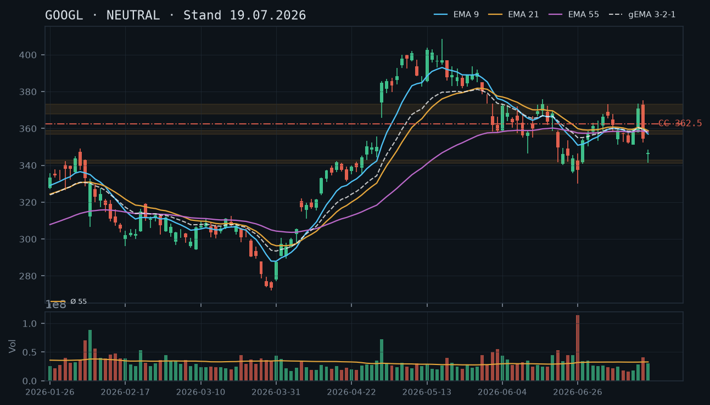
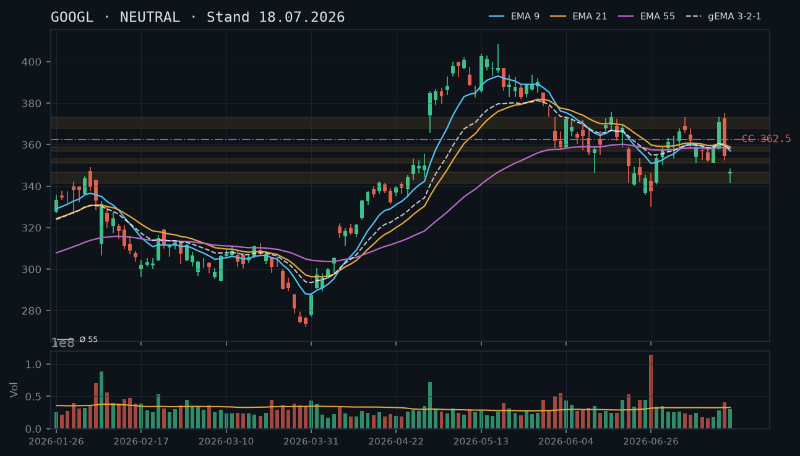
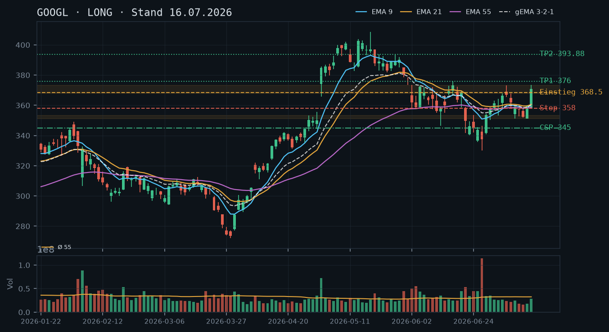
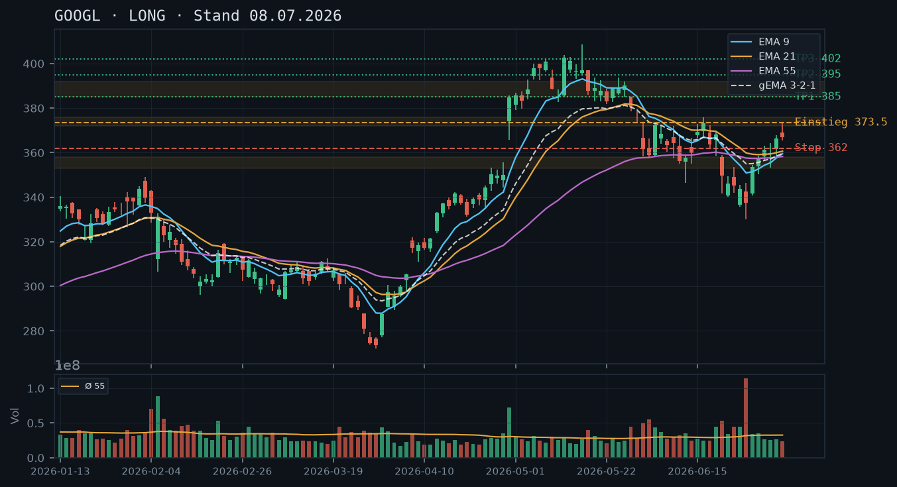

GOOGL
Analyse-Historie · neueste zuerstGOOGL bricht am 23.07. mit -4% auf 328,49 unter das Sommer-Tief 341,36 ein – die gesamte Rally-Struktur seit März kollabiert, alle EMAs fallen, kein CSP-Fundament in Sicht; Short-Bias dominiert, der CC auf den Aktienbestand ist das einzig valide Instrument.

1 · Trendstruktur
Die Trendstruktur ist eindeutig bearish: GOOGL hat mit dem heutigen Intraday-Kurs von 328,49 das bisherige Sommer-Tief vom 17.07. (341,36) klar gebrochen und markiert damit ein neues tieferes Tief in der Kette 375,27 → 341,36 → 328,49. Die Long-These vom 16.07. ist damit vollständig verworfen. Das Muster aus fallenden Hochs (375,27 → 359,68 → 351,32) und fallenden Tiefs (341,36 → 342,09 → 328,49) konstituiert einen intakten Abwärtstrend. Relevante Unterstützungen: 320–322 (April-Ausbruchsniveau vom 08.04.), darunter 305–307 (März-Konsolidierungszone). Widerstand: 341–343 (gebrochenes Sommer-Tief, jetzt Resistance), 351–353 (ehemalige viermal getestete Basiszone, nun massiver Widerstand).
2 · Candlestick-Formationen
Die letzten drei Kerzen zeichnen ein konsistentes Bild: Am 21.07. eine bearishe Kerze (Schluss 347,15, Tageshoch = Eröffnung 351,32 – kein Aufwärtsmomentum). Am 22.07. eine weitere Abwärtskerze mit Schluss 342,09 und erhöhtem rel. Volumen von 1,23 – der Kurs drückt in Richtung Sommer-Tief. Heute am 23.07. ein weiterer Sell-off mit -4% auf 328,49 (Intraday) – das Sommer-Tief 341,36 wurde als Support klar unterschritten. Das ist ein Breakdown-Signal, kein Reversal-Setup.
3 · EMA-Lage (9 / 21 / 55)
Alle drei EMAs fallen: EMA9 bei 351,78, EMA21 bei 355,84, EMA55 bei 356,96 – der gema_321 liegt bei 354,00. Die Reihenfolge EMA9 < EMA21 < EMA55 (verkehrt zur Bullphase) bestätigt den Abwärtstrend. Der Kurs (328,49) notiert mit ca. 23–28 Punkten Abstand unterhalb des gesamten EMA-Verbunds – kein naher Support durch die EMAs. Der Verbund selbst konvergiert (Delta EMA9–EMA55 nur ~5 Punkte), was bedeutet, dass auch ein kurzes Aufbäumen den Kurs noch lange nicht in bullisches Fahrwasser bringt.
4 · Trade-Setup
| Richtung | Short |
| Einstieg | 328,49 (Markt, Breakdown bereits laufend) – für Momentum-Trader: Short-Einstieg bei Bounce in die Zone 341–343 (ehem. Sommer-Tief als neue Resistance) |
| Stop | 349,00 (über der Zone 347–351, klar über dem gebrochenen Sommer-Tief) |
| Ziel | 321,00 (Zwischenziel, April-Gap-Bereich 317–322) / 307,00 (Hauptziel, März-Konsolidierung 305–307) |
| CRV | Bounce-Short ab 341: Stop 349 → Ziel 321: CRV 2,5 : 1 / Ziel 307: CRV 4,3 : 1 |
5 · Stillhalter (max. 12 Tage)
Ein CSP ist bei diesem Breakdown ohne bestätigten Boden kategorisch abzulehnen – kein tragfähiges Support-Fundament unterhalb von 328,49 bis zur April-Zone 320–322, und selbst die ist erst einmal ungetestet. Mit 100 Aktien im Bestand (IBKR-Snapshot 11:37 Uhr) ist ein Covered Call auf den nächsten Widerstandsbereich das einzig sinnvolle Stillhalter-Instrument. Der CC kompensiert den Buchverlust partiell und deckt das Risiko für den Aktienbestand ab.
| Geschäft | Covered Call |
| Strike | 345.0 |
| Puffer | 5.0 % |
| Zone | unterhalb des gebrochenen Sommer-Tiefs 341,36–343, das jetzt als erste Widerstandszone fungiert, und weit unterhalb des EMA-Clusters 351–356 |
| Verfall bis | 2026-08-01 (9 Tage) |
| Begründung | Strike 345,00 liegt oberhalb des gebrochenen Sommer-Tiefs (341,36), das nun als Widerstand fungiert. Der Kurs müsste zunächst ~4% zulegen und die Zone 341–343 zurückerobern, bevor der Strike in Gefahr gerät. Darüber liegt der gesamte EMA-Verbund (351–356) als zusätzliche Widerstandsmauer. Andienungsszenario bei 345,00: Abgabe der 100 Aktien auf dem Niveau des ehemaligen Sommer-Tiefs – strukturell vertretbar als Ausstieg aus einer im Verlust befindlichen Position, allerdings deutlich unter Einstandsniveau, falls der Kauf über 351 erfolgte. Alternativ-Strike 342,00 prüfen (liegt direkt auf der Widerstandszone, maximale Prämie, aber sehr enges Andienungsrisiko). Konservativere Alternative: Strike 350,00 mit ~6,5% Puffer, unterhalb des gesamten EMA-Clusters. In der Optionskette zu prüfen: Prämie am 345er CC mit Verfall 01.08., Delta sollte idealerweise zwischen -0,30 und -0,40 liegen angesichts erhöhter impliziter Volatilität nach dem Sell-off; Spread und Open Interest am 345er Strike. |
Bestand: Im Bestand: 100 Aktien GOOGL (IBKR-Snapshot 23.07., 11:37 Uhr), keine offenen Optionen. Der Covered Call aus der Analyse vom 18.07. (CC 362,50 / 24.07.) ist – sofern er je eröffnet wurde – heute wertlos bzw. nahezu wertlos (Kurs 328,49 vs. Strike 362,50) und sollte geschlossen oder auslaufen gelassen werden. Priorität jetzt: Neuen CC auf Strike 345,00 / Verfall 01.08. prüfen und eröffnen. Roll-Trigger für den neuen CC: (1) Erholt sich GOOGL per Tagesschluss klar über 343 und zeigt ein Reversal-Muster (z.B. Hammer mit erhöhtem Volumen), bei ~50% Prämiengewinn schließen und auf höheren Strike rollen. (2) Fällt der Kurs weiter unter 320, CC wertlos auslaufen lassen – danach erst nach Bodenbildungsbestätigung (mindestens zwei bullische Tagesschlüsse über dem Tief mit erhöhtem Volumen) einen neuen CC oder CSP evaluieren.
Ausführliche Analyse vom 23.07.2026 anzeigen
GOOGL – Detailanalyse 23.07.2026
Abgleich mit historischen Analysen
Die Analyse-Serie wird hier explizit abgeglichen:
- 16.07.2026 (LONG): Vollständig verworfen. Die Long-These basierte auf dem Ausbruch über 373,16 und der viermal getesteten Basiszone 351–353 als Fundament. Beide Annahmen sind gescheitert: Der Ausbruch war ein Bull-Trap (Hoch 375,27, dann -13% in wenigen Tagen), und die Zone 351–353 hat als Support versagt.
- CSP 345,00 / 24.07. (16.07.): Wurde durch den Kursrutsch auf 346,77 am 18.07. bereits gefährdet – korrekt als nicht mehr valide eingestuft in der Folgeanalyse. Heute mit Kurs 328,49 um >16 Punkte im Geld – wäre eine Katastrophe gewesen, falls tatsächlich eröffnet.
- 18.07.2026 (NEUTRAL, CC 362,50 / 24.07.): Die Einschätzung 'kein tragfähiger Boden' war korrekt. Der CC 362,50 läuft am 24.07. morgen wertlos aus – das ist das einzig Positive aus dieser Woche. Die Analyse hat den weiteren Rückgang nicht ausgeschlossen.
- 19.07.2026 (NEUTRAL, CC 362,50 / 25.07.): Korrekte Diagnose, aber der Kurs hat sich nicht stabilisiert – die Bedingung 'Hammer-Kerze mit erhöhtem Volumen auf Sommer-Tief-Bereich 341–343' wurde nicht erfüllt; stattdessen brach der Kurs heute darunter.
1. Trendstruktur – Breakdown-Analyse
GOOGL befindet sich in einem beschleunigten Abwärtstrend. Die Sequenz der relevanten Hochs und Tiefs seit dem Allzeithoch-nahen Bereich bei 402 (06.05.2026) bis heute:
- Hoch 402,62 (13.05.) → Korrektur → Hoch 375,27 (16.07.) → aktuell Tief 328,49 (23.07., intraday)
- Tiefes Tief-Sequenz: 341,36 (17.07.) → 342,09 (22.07., Schlusskurs) → 328,49 (23.07., intraday) – jeder Versuch einer Erholung scheitert unterhalb des vorherigen Schlusskurses
Kritische Zonen:
- Widerstand 341–343: Gebrochenes Sommer-Tief, jetzt erste Resistance. Ehemals viermal getesteter Boden (22.06., 23.06., 25.06., 17.07.) – gibt jetzt als Deckel.
- Widerstand 351–353: Die ehemalige Basiszone (02.07., 09.07., 13.07., 14.07.) ist nun massiver Widerstand, verstärkt durch den EMA-Cluster 351–356.
- Support-Kandidat 320–322: April-Ausbruchsniveau (08.04. Gap-up von 317 auf 322, Schluss 317,32). Erst einmal ungetestet seit dem Ausbruch – potenzieller erster Halt, aber kein bestätigter Support.
- Support-Kandidat 305–307: März-Konsolidierungszone (13.–19.03., mehrfach bestätigt). Strukturell solider, aber weit entfernt.
- Kein bestätigter Support zwischen 328 und 320 – dies ist der gefährlichste Aspekt der aktuellen Lage.
2. Candlestick-Formationen
Die letzten Kerzen sprechen eine eindeutige Sprache:
- 21.07. (rel. Vol. 0,74): Bearishe Kerze, Eröffnung = Tageshoch (351,32), Schluss 347,15. Klassisches 'Shooting Star'-ähnliches Profil ohne Käufer-Interesse – volumenmäßig unauffällig, aber richtungsweisend.
- 22.07. (rel. Vol. 1,23): Bearishe Kerze mit erweitertem Spread (High 349,94, Low 341,73, Schluss 342,09) – Volumen 23% über Schnitt. Das erhöhte Volumen auf dem Weg nach unten ist Distribution, kein Accumulation-Signal.
- 23.07. (intraday, rel. Vol. noch offen): Gap-down-ähnlicher Open, Kurs 328,49 mit -4% – der Breakdown unter 341,36 (Sommer-Tief) ist eine Continuation Breakdown Candle. Kein Reversal-Signal vorhanden.
3. EMA-Verbund – Detailbewertung
Stand per Schluss 22.07.: EMA9 = 351,78 / EMA21 = 355,84 / EMA55 = 356,96 / gema_321 = 354,00.
Die EMAs befinden sich in bearisher Ausrichtung (EMA9 < EMA21 < EMA55), der gema_321 konvergiert und zeigt nachlassende Aufwärtsdynamik. Der Abstand des heutigen Intraday-Kurses (328,49) zum gema_321 (354,00) beträgt ca. 25,5 Punkte bzw. ~7,2% – eine extreme Überdehnung nach unten. Solche Überdehnung kann mean-reversion-Bounces auslösen (Short-Covering), aber ohne strukturellen Katalysator (z.B. Earnings-Beat, Markt-Sentiment-Wende) sind Bounces als Verkaufsgelegenheiten zu werten, nicht als Reversal-Signale.
Der EMA9 liegt 23 Punkte über dem aktuellen Kurs – selbst ein Zurückerobern des EMA9 würde den Trend nicht drehen. Für eine bullische Wiederherstellung wäre ein Schluss klar über dem gema_321 (354) und dann über EMA21 (355,84) erforderlich.
4. Trade-Setups – Alternativen A/B/C
Setup A (bevorzugt) – Short-Bounce:
Einstieg: Bounce in die Zone 341–343 (gebrochenes Sommer-Tief als Resistance) – Stop-Limit Short bei 341,50 nach Ablehnung.
Stop: 349,00 (über Zone 347–351 und psychologischen Bereich)
Ziel 1: 321,00 (April-Ausbruchsniveau) → CRV: (341,50 – 321) / (349 – 341,50) = 20,50 / 7,50 = 2,7 : 1
Ziel 2: 307,00 (März-Zone) → CRV: 34,50 / 7,50 = 4,6 : 1
Bedingung: Bounce mit abnehmendem Volumen in Zone 341–343, gefolgt von bearisher Umkehrkerze (z.B. Shooting Star, Bearish Engulfing).
Setup B – Momentum-Short (aktuell):
Einstieg: Markt (328,49), nur für Trader mit hoher Risikotoleranz – Breakdown-Momentum nutzen.
Stop: 338,00 (knapp unter gebrochener Zone)
Ziel: 321,00 → CRV: 7,49 / 9,51 = 0,8 : 1 – nicht empfehlenswert, CRV zu schwach nach bereits gelaufener Bewegung.
Dieses Setup nur im Intraday-Kontext mit engen Stops valide.
Setup C – Abwarten auf Bodenbildung (für Long-Orientierte):
Bedingung: Hammer-Kerze mit rel. Volumen > 1,5 auf oder unter 320–322, gefolgt von bullischem Bestätigungsschluss über 330.
Einstieg: Erstes höheres Tief über 322.
Stop: 315,00.
Ziel: 343 (Widerstand) → erst wenn erfüllt, Long-Bias reaktivieren. Aktuell nicht auslösbar.
5. Stillhalter-Analyse (Schwerpunkt)
Warum kein CSP
Ein Cash-Secured Put ist in dieser Situation kategorisch kontraindiziert. Begründung:
- Das Sommer-Tief 341,36 – der letzte bestätigte Support – ist heute gebrochen. Damit existiert zwischen 328,49 und 320–322 (April-Ausbruchs-Gap) kein einmal getesteter Support.
- Ein CSP unterhalb von 320 hätte zwar technischen Puffer, aber: Prämien in einem Breakdown ohne nahen Support sind verzerrt durch erhöhte IV; das Andienungsrisiko bei Fortsetzung Richtung 307 wäre erheblich.
- Qualitätsgrundsatz: Kein CSP ohne bestätigten Support. Erst wenn GOOGL mindestens zwei Tagesschlüsse über einem Tief mit erhöhtem Volumen zeigt (Accumulation-Signal), ist ein CSP-Setup wieder evaluierbar.
Covered Call – Herleitung Strike 345,00 / Verfall 01.08.2026
Der CC ist das primäre und einzig empfohlene Stillhalter-Instrument. Herleitung:
- Zone 341–343: Gebrochenes Sommer-Tief (17.07. Low 341,36, 22.07. Low 341,73, 22.06. Low 341,72) – dreifach bestätigte Tiefzone, jetzt als Widerstand deklariert. Diese Zone ist der technische Puffer vor dem Strike.
- Strike 345,00: Liegt ~5% über dem aktuellen Kurs (328,49), klar oberhalb der Zone 341–343, und noch deutlich unterhalb des EMA-Clusters 351–356. Der Kurs muss die Zone 341–343 als Resistance erst überwinden, bevor er den Strike erreicht. Auf 2,50er-Schritten rund (handelstypisch für GOOGL).
- Verfall 01.08.2026: 9 Tage Restlaufzeit (innerhalb der 12-Tage-Grenze). Der nächste Standard-Freitag wäre 25.07. (nur 2 Tage), was in diesem volatilen Umfeld kaum Prämie generiert bei gleichzeitig hohem Gap-Risiko. Der 01.08. bietet ausreichend Zeitwert und bleibt im Rahmen.
- Andienungsszenario: Abgabe der 100 Aktien bei 345,00 – das liegt zwar über dem heutigen Kurs, aber wahrscheinlich deutlich unter dem ursprünglichen Einstandspreis (falls Kauf im Bereich 351–375 erfolgte). Dies ist strukturell akzeptabel als Verlust-Begrenzungs-Maßnahme mit Premium-Kompensation, nicht als attraktiver Exit. Alternative: Falls der Anleger die Aktien unbedingt halten will, ist 345,00 als Strike gefährlich bei einem möglichen Bounce – in diesem Fall Strike 350,00 oder 352,50 wählen (Puffer ~6,5–7,3%), aber Prämie stark reduziert.
- Roll-Trigger: (1) Kurs erholt sich per Tagesschluss über 343 mit erhöhtem Volumen (rel. Vol. > 1,3) → CC bei 50% Gewinn schließen und auf höheren Strike (z.B. 355,00 / 01.08.) rollen, um Aufwärtspotenzial freizugeben. (2) Kurs fällt weiter auf 320 oder darunter → CC läuft wertlos aus, maximaler Prämiengewinn. Danach: Neues Setup erst nach Bodenbildungsbestätigung. (3) Kurs rallyt stark über 343 ohne Roll: Verlust der Aktien bei 345 akzeptieren oder CC zu erhöhtem Preis zurückkaufen (kostet Prämie).
Optionskette – Was zu prüfen ist
Da kein IBKR-Optionsdaten-Snapshot vorliegt, sind folgende Parameter manuell in der Kette zu verifizieren:
- Prämie 345er CC / 01.08.: Bei hoher impliziter Volatilität (IV nach -4% Sell-off typischerweise erhöht) sollte die Prämie den 5%-Puffer gut kompensieren. Als Richtwert: >2,50 (Mid) wäre akzeptabel bei diesem Strike-Abstand.
- Delta: Bei Strike 345 und Kurs 328,49 erwartetes Delta ca. -0,25 bis -0,35 – im idealen Bereich für einen CC nach einem Sell-off.
- Liquidität: GOOGL ist hochliquide – Spread sollte eng sein. Open Interest am 345er / 01.08. prüfen, falls ungewöhnlich dünn, auf 347,50 oder 350 ausweichen.
- IV-Crush-Risiko: Falls ein Catalyst (z.B. Earnings, Marktdaten) in den nächsten 9 Tagen ansteht, könnte die IV nach dem Event crashen und den CC-Wert stark reduzieren – Timing und Earnings-Kalender prüfen.
GOOGL stabilisiert sich nach dem brutalen Zwei-Tages-Absturz von 375 auf 341 bei ~354, notiert aber noch unterhalb des komprimierten EMA-Clusters – kein direktionaler Trade, der Covered Call aus der Analyse vom 18.07. (362,50 / 24.07.) ist das primäre Instrument für den Aktienbestand.

1 · Trendstruktur
Die übergeordnete Trendstruktur ist beschädigt: Nach dem Ausbruchshoch bei 375,27 (16.07.) folgte ein Zwei-Tages-Einbruch auf das Intraday-Tief 341,36 (17.07.) – ein Verlust von 9,2% in zwei Sitzungen. Der Kurs hat die gesamte Breakout-Bewegung vom 15.07. wieder abgegeben und notiert mit ~354 zurück im Kernbereich der Juli-Konsolidierung. Die wichtigste Struktur-Aussage: Das lokale Hoch 375,27 ist jetzt Widerstand, das Sommer-Tief 341,36 ist neuer, ungetesteter Support – GOOGL steckt in einer Sandwich-Zone ohne klare Richtung.
2 · Candlestick-Formationen
Die letzte verfügbare Kerze (17.07.) ist eine große Bearish-Kerze (Open 346,00, Close 346,77, High 348,52, Low 341,36) mit sehr kurzem Doji-Körper relativ zur Range – der Markt kam nach dem Sell-off an diesem Tag kaum vom Fleck. Das relative Volumen lag bei 0,91 (unter Schnitt), was für eine Kapitulations-Erschöpfung spricht, aber keine Bestätigung eines echten Bodens ist. Der heutige Snapshot zeigt 354,46 (+2,24% Erholung), also eine potenzielle Inside-Day-Erholung, deren Schluss entscheidend sein wird.
3 · EMA-Lage (9 / 21 / 55)
EMA-Lage (Stand 17.07.): EMA9 bei 356,96, EMA21 bei 358,84, EMA55 bei 358,11 – ein extremes Kompressions-Artefakt: Die drei EMAs liegen auf knapp 2 Punkten zusammengepresst, wobei EMA55 (358,11) zwischen EMA9 (356,96) und EMA21 (358,84) liegt. Das ist strukturell ungewöhnlich und zeigt die Orientierungslosigkeit des Marktes. Der gema_321-Verbund bei 357,78 wirkt als Deckel ~3,5 Punkte über dem gestrigen Schluss und ~3,3 Punkte über dem aktuellen Kurs 354,46. Ein nachhaltiger Durchbruch über 358–359 wäre das erste positive Signal.
4 · Trade-Setup
| Richtung | Kein Trade |
| Einstieg | Kein valides direktionales Setup – Kurs zwischen Sommer-Tief 341,36 und EMA-Cluster 356–359, keine Bestätigung in beide Richtungen |
| Stop | — |
| Ziel | — |
| CRV | — |
5 · Stillhalter (max. 12 Tage)
Mit 100 Aktien im Bestand und keinen offenen Optionen (IBKR-Snapshot 12:10 Uhr) ist der Covered Call das einzig sinnvolle Stillhalter-Instrument. Ein CSP scheidet aus: Der Kurs hat noch keinen bestätigten Boden, und das Sommer-Tief 341,36 ist erst einmal getestet – kein tragfähiges CSP-Fundament. Der CC auf 362,50 (Analyse 18.07.) ist weiterhin das bevorzugte Setup, sofern er noch nicht eröffnet wurde.
| Geschäft | Covered Call |
| Strike | 362.5 |
| Puffer | 2.3 % |
| Zone | oberhalb des komprimierten EMA-Clusters 356,96–358,84 und der gebrochenen Support-Zone 358–360, die nun als Widerstand fungiert |
| Verfall bis | 2026-07-25 (6 Tage) |
| Begründung | Strike 362,50 liegt klar oberhalb des gesamten EMA-Verbunds (356,96–358,84), den GOOGL zunächst zurückerobern müsste. Die Zone 358–360 – ehemaliger Support, jetzt Widerstand – bildet den technischen Puffer vor dem Strike. Bei aktuellem Kurs 354,46 beträgt der Puffer zum Strike ~2,3%, was in diesem Marktumfeld mit hoher Volatilität eng ist. Der Strike sollte daher in der Optionskette auf eine Prämie geprüft werden, die den engen Puffer kompensiert – Delta idealerweise -0,25 bis -0,35. Andienungsszenario bei 362,50: Abgabe der 100 Aktien auf Widerstandsniveau – strukturell akzeptabel, da dies nur leicht über dem EMA-Cluster liegt. Alternativ-Strike 365,00 als konservativere Variante prüfen (dann ~3,0% Puffer, unterhalb der Zone 367,84–373,16). |
Bestand: Im Bestand: 100 Aktien GOOGL, keine offenen Optionen (IBKR-Snapshot 19.07., 12:10 Uhr). Falls der Covered Call 362,50 / 24.07. aus der Analyse vom 18.07. noch nicht eröffnet wurde, ist er heute das primäre Instrument – der Verfall 24.07. hat noch 5 Handelstage. Roll-Trigger für bestehenden oder neu eröffneten CC 362,50 / 24.07.: (1) Sollte GOOGL den EMA-Cluster (358–359) und die Zone 360 per Tagesschluss klar zurückerobern und Richtung 367–373 laufen, frühzeitiges Schließen bei ~50% Prämiengewinn prüfen; (2) Sollte der Kurs auf 341–343 zurückfallen, CC wertlos auslaufen lassen oder bei >80% Gewinn früh schließen und danach auf Stabilisierungsbestätigung für neuen CSP warten – Bedingung: Hammer-Kerze mit erhöhtem Volumen auf dem Sommer-Tief-Bereich 341–343.
Ausführliche Analyse vom 19.07.2026 anzeigen
GOOGL – Detailanalyse 19.07.2026
1. Trendstruktur & historischer Kontext
Die letzte Analyse vom 18.07. diagnostizierte eine gefährliche Sandwich-Zone zwischen dem Sommer-Tief ~341 und der gebrochenen Zone 358–360. Diese Diagnose ist heute, am 19.07., nach wie vor vollständig gültig. Der Kurs notiert laut IBKR-Snapshot (12:10 Uhr) bei 354,46 – eine Erholung von +2,2% gegenüber dem gestrigen Schluss 346,77, aber noch deutlich unterhalb des EMA-Clusters.
Der übergeordnete Kontext der Analysereihe: Die Long-These vom 08.07. und 16.07. wurde durch den Zwei-Tages-Einbruch (16.–17.07., -7,9%) vollständig falsifiziert. Das Hoch vom 16.07. bei 375,27 ist jetzt primärer Widerstand. Die viermal bestätigte Basiszone 351–353 (02.07., 09.07., 13.07., 14.07.) – auf der der CSP-Trade vom 16.07. basierte – wurde am 17.07. mit Intraday-Low 341,36 klar gebrochen. Damit ist auch diese Zone beschädigt; sie kann frühestens nach mehreren erfolgreichen Retests als Support reaktiviert werden.
Aktuelle Schlüssel-Zonen:
- Support 1 (unbestätigt): 341,36 – Sommer-Tief 17.07., erst einmal getestet, kein Bestätigungstest.
- Support 2 (beschädigt): 351–353 – ehemalige Vier-Test-Zone, durch Intraday-Unterschreitung geschwächt.
- Widerstand 1 (komprimierter EMA-Cluster): 356,96–358,84 (EMA9/EMA21/EMA55 alle auf ~2 Punkte zusammengepresst).
- Widerstand 2: 358–360 – gebrochener Support, nun Widerstand.
- Widerstand 3: 367,84–373,16 – die Breakout-Zone vom 15.07., jetzt starker Deckel.
- Widerstand 4: 375,27 – das Breakout-Hoch.
2. Candlestick-Analyse
Die Kerze vom 17.07. (Open 346,00, High 348,52, Low 341,36, Close 346,77) zeigt nach dem massiven Einbruch eine relativ enge Body-Range von nur ~0,77 Punkten bei einer Tages-Range von 7,16 Punkten – das Kerzenmuster ähnelt einem High-Wave Candle oder einem Ansatz eines Erholungs-Dojis. Das rel_volumen lag bei 0,91 – unter dem 55er-Durchschnitt, was bemerkenswert ist: Der starke Sell-off-Tag (16.07., rel_vol 1,26) hatte deutlich mehr Volumen als der vermeintliche Boden-Tag. Klassische Bodenbildungsmuster (Hammer mit überdurchschnittlichem Volumen) fehlen damit.
Die heutige Intraday-Erholung auf 354,46 (IBKR 12:10) ist noch keine abgeschlossene Kerze. Entscheidend wird der Tagesschluss sein: Ein Schluss oberhalb von 353–354 mit angemessenem Volumen wäre ein erstes konstruktives Zeichen. Ein Rückfall unter 341 würde ein neues lokales Tief markieren.
3. EMA-Lage & Verbund-Analyse
Die EMA-Konstellation per 17.07. ist ein Lehrbuch-Beispiel für ein Kompressions-Artefakt: EMA9 (356,96) liegt unter EMA55 (358,11), während EMA21 (358,84) darüber notiert. Reihenfolge: EMA21 > EMA55 > EMA9 – strukturell inkohärent und ein Zeichen extremer Richtungslosigkeit. Der gema_321-Verbund bei 357,78 gewichtet EMA9 am stärksten (Faktor 3) und liegt damit genau zwischen EMA55 und EMA21.
Der Abstand des aktuellen Kurses (354,46) zum gema_321-Verbund (357,78) beträgt -3,32 Punkte (-0,93%). Ein Kurs, der den Verbund von unten berührt und abprallt, wäre ein bearisches Signal. Ein Durchbruch und Tagesschluss darüber wäre das erste bullische EMA-Signal seit dem Einbruch.
4. Direktionale Trade-Setups (A/B/C)
In der aktuellen Marktlage gibt es kein bevorzugtes direktionales Setup mit positivem Erwartungswert. Zur Vollständigkeit drei hypothetische Szenarien:
- Setup A – Bullischer Retest-Long (noch nicht aktiv): Einstieg erst nach Tagesschluss über 360 mit Volumen >1,0x Schnitt. Stop unter 351. Ziel 373–375. CRV: ca. 2,6:1. Bedingung: noch nicht erfüllt.
- Setup B – Boden-Confirmation-Long (noch nicht aktiv): Rückfall auf 341–343, Hammer-Kerze mit rel_vol >1,5, dann Long. Stop unter 338. Ziel 358–360. CRV: ca. 1,7:1. Bedingung: noch nicht erfüllt.
- Setup C – Short-Setup (sehr selektiv): Rückeroberung 358–360, Abprall mit bearischer Kerze, Short unter Tagestief. Stop über 365. Ziel 341–343. CRV: ca. 1,5:1. Risiko: Gegentrend zum übergeordneten Aufwärtstrend seit März.
Alle drei Setups erfordern weitere Bestätigung. Heute kein Einstieg.
5. Stillhalter-Schwerpunkt: Covered Call – Zonen-Herleitung & Andienungslogik
Der IBKR-Snapshot (19.07., 12:10 Uhr) bestätigt: 100 Aktien GOOGL im Bestand, keine offenen Optionen. Der in der Analyse vom 18.07. empfohlene CC 362,50 / 24.07. wurde offenbar noch nicht eröffnet. Die technische Basis für diesen Strike ist unverändert gültig.
Herleitung Strike 362,50:
- Ebene 1 – EMA-Cluster: 356,96–358,84 als erste Widerstandsmauer. Der Kurs muss diesen Bereich (~4,5 Punkte über aktuellem Kurs) erst zurückerobern.
- Ebene 2 – Gebrochener Support: Zone 358–360 als Widerstand. Zwei Widerstands-Ebenen vor dem Strike.
- Strike 362,50 liegt ~8 Punkte (2,3%) über aktuellem Kurs – in einem normalen Markt eng, aber mit zwei Widerstandsebenen davor funktional abgesichert.
- Handelsüblicher Strike-Schritt: 362,50 ist ein gültiger 2,50er-Schritt.
Konservative Alternative – Strike 365,00: Puffer ~3,0%, liegt unter der nächsten großen Zone 367,84–373,16. Bietet mehr Sicherheit auf Kosten der Prämie. In der Optionskette prüfen: Ist die Prämie am 365er noch akzeptabel gegenüber dem 362,50er?
Andienungsszenario Strike 362,50: Abgabe der 100 Aktien bei 362,50 wäre ein Verkauf auf Widerstandsniveau – strukturell vollkommen akzeptabel. Der Einstandspreis der Aktien ist nicht bekannt, aber ein Verkauf auf Widerstandsniveau ist prinzipiell eine gute Exit-Strategie. Nach Andienung wäre die Position neutral; ein neuer CSP erst nach Bodenbestätigung.
Warum kein CSP: Das Sommer-Tief 341,36 ist erst einmal getestet – kein bestätigter Support. Ein CSP unter 341 (z.B. Strike 335) hätte einen Puffer von ~5,5% zum aktuellen Kurs, würde aber auf einem völlig ungetesteten Niveau liegen. Das entspricht nicht den Qualitätsanforderungen (mehrfach bestätigte Zone als Fundament). Die Analyse vom 18.07. hat CSP bereits auf null gesetzt – diese Einschätzung wird heute bestätigt und aufrechterhalten.
Roll-Logik für den CC 362,50 / 24.07.:
- Frühzeitiger Gewinn-Exit (50%-Regel): Sobald die CC-Prämie auf 50% des Eröffnungspreises gefallen ist, Schließen und Aufwärtspotenzial freigeben – relevant, wenn GOOGL schnell in Richtung 362 läuft.
- Roll nach oben: Sollte GOOGL den EMA-Cluster klar überwinden und Richtung 367–373 laufen, CC bei ~80% Gewinn schließen und ggf. einen neuen CC auf Strike 370–372,50 / 25.07.–01.08. eröffnen.
- Wertloser Verfall: Fällt GOOGL zurück auf 341–343, verfällt der CC wertlos – maximale Prämie eingestrichen. Danach Beurteilung für neuen CC oder erste CSP-Überlegungen, sofern Boden bestätigt wird.
- Verfallstermin: 24.07. (Freitag, 5 Handelstage) bleibt das bevorzugte Verfallsdatum. Der übernächste Standard-Freitag wäre 01.08. als Alternative, falls die Prämie am 24.07. zu niedrig erscheint.
GOOGL hat nach dem Breakout-Hoch bei 375,27 am 16.07. in zwei Sitzungen brutal korrigiert (-7,9% auf 346,77) und notiert nun wieder unterhalb aller drei EMAs – die Long-These vom 16.07. ist beschädigt, ein klarer neuer Trend fehlt, strukturell befinden wir uns in einer gefährlichen Sandwich-Zone zwischen dem Sommer-Tief ~341 und dem gebrochenen Support 358–360.

1 · Trendstruktur
Die Long-Progression aus der Analyse vom 08./16.07. hat einen schweren Rückschlag erlitten. Nach dem Intraday-Hoch 375,27 (16.07.) folgte bereits am gleichen Tag eine massive Umkehr – Schluss 354,46 mit einem langen Docht von fast 21 Punkten – und am 17.07. ein weiterer Gap-Down-Eröffnung bei 346,00, Schlusskurs 346,77. Der Kurs hat damit die gesamte Ausbruchs-Kerze vom 15.07. (370,92) vollständig zurückgegeben und liegt nun wieder im Niemandsland zwischen dem Cluster-Low 341–353 und der ehemaligen Unterstützungszone 358–360. Das Muster Höheres Tief (353,42 → 375,27) ist zwar noch intakt als Einzelmessung, aber das Schlusskurs-Hoch auf Wochenbasis liegt nun unter dem Tageshoch der Vorwoche – ein klassisches Exhaustion-Signal nach einem volumenschwachen Ausbruch.
2 · Candlestick-Formationen
16.07.: Shooting Star / Bearish Reversal mit Intraday-Hoch 375,27 und Schluss 354,46 – Docht von ~20,8 Punkten, rel. Volumen 1,26 (erhöht, aber kein extremes Volumen). Das ist ein klassischer Reversal-Stab nach einem Breakout-Versuch. 17.07.: Bearish Continuation – Gap-Down-Eröffnung bei 346,00 (6 Punkte Gap unter Vorschluss), enges Tagesrange 341,36–348,52, Schluss 346,77 nahe dem Tageshoch – das Abwärts-Gap wurde nicht geschlossen, leichte Stabilisierung, aber kein bullisches Reversal-Signal. Zusammen bilden die beiden Kerzen eine Bearish Engulfing-ähnliche Struktur über die Ausbruchskerze vom 15.07.
3 · EMA-Lage (9 / 21 / 55)
EMA 9: 356,96 | EMA 21: 358,84 | EMA 55: 358,11 | gema_321: 357,78. Bemerkenswert: Alle drei EMAs komprimieren auf einem engen Band von 357,78–358,84 – ein klassisches Kompressionsartefakt, bei dem EMA 55 (358,11) sogar zwischen EMA 9 (356,96) und EMA 21 (358,84) liegt. Der aktuelle Kurs 346,77 notiert rund 10–12 Punkte UNTER dem gesamten EMA-Cluster – das ist bearish. Der gema_321 bei 357,78 wirkt als komprimierter Widerstandsbereich. Ein Rückeroberung dieses Clusters wäre die Minimalvoraussetzung für eine Erneuerung der Long-These.
4 · Trade-Setup
| Richtung | Kein Trade |
| Einstieg | Kein valides Setup – Kurs zwischen zwei unklaren Zonen, EMA-Cluster als Widerstand darüber |
| Stop | — |
| Ziel | — |
| CRV | — |
5 · Stillhalter (max. 12 Tage)
Die Situation hat sich seit dem 16.07. fundamental verändert. Der CSP auf 345,00 (Analyse 16.07.) ist aufgrund des aktuellen Kurses von 346,77 nicht mehr valide – der Kurs ist nahezu auf Strike-Niveau. Stattdessen bietet sich mit 100 Aktien im Bestand ein Covered Call auf Widerstandsniveau als primäres Instrument an, um den Rückgang teilweise zu kompensieren. Ein neuer CSP ist derzeit nicht empfehlenswert, da der Kurs noch keinen tragfähigen Boden ausgebildet hat.
| Geschäft | Covered Call |
| Strike | 362.5 |
| Puffer | 4.5 % |
| Zone | unterhalb des komprimierten EMA-Clusters 356,96–358,84 und der gebrochenen Zone 358–360, mit Widerstand bis 367,84–373,16 |
| Verfall bis | 2026-07-24 (6 Tage) |
| Begründung | Strike 362,50 liegt oberhalb des EMA-Clusters (357,78–358,84), der als erste Widerstandsmauer wirkt, und oberhalb der Zone 358–360, die als frühere Unterstützung nun zu Widerstand geworden ist. Der Kurs müsste zunächst den gesamten EMA-Verbund (+12 Punkte) zurückerobern, bevor der Strike in Gefahr gerät. Mit 100 Aktien im Bestand ist dies ein regulärer Covered Call ohne Naked-Call-Risiko. Andienungsszenario bei 362,50: Abgabe der Aktien auf dem Niveau der gebrochenen Ausbruchszone – strukturell akzeptabel, da dies nur leicht über dem heutigen EMA-Cluster liegt. Prüfen in der Optionskette: Prämie am 362,50er CC mit Verfall 24.07., Delta sollte idealerweise -0,25 bis -0,35 sein, Liquidität und Spread am 362,50er Strike. |
Bestand: Es sind 100 Aktien im Bestand (IBKR-Snapshot 18.07., 19:45 Uhr) – ausreichend für genau 1 Kontrakt Covered Call. Keine bestehenden Short-Optionen vorhanden. Der Covered Call 362,50 / 24.07. ist die empfohlene erste Maßnahme. Roll-Trigger: Sollte GOOGL die Zone 358–360 und den EMA-Cluster per Tagesschluss zurückerobern und in Richtung 367–373 laufen, wäre ein frühzeitiges Schließen des CC bei ~50% Prämiengewinn zu prüfen, um Aufwärtspotenzial freizugeben. Sollte der Kurs weiter auf 341–343 fallen, ist der CC wertlos und man evaluiert einen neuen CSP erst nach Stabilisierungsbestätigung (bspw. Hammer-Kerze mit erhöhtem Volumen auf dem Juni-Low-Bereich).
Ausführliche Analyse vom 18.07.2026 anzeigen
GOOGL – Detailanalyse 18.07.2026
1. Trendstruktur – Verifikation der Vorgabe-Analysen
Die Analyse vom 16.07. deklarierte die Zone 351,09–353,42 als viermal bestätigte Basis und nannte den Ausbruch vom 15.07. (Schluss 370,92) als Bestätigung der Long-These. Diese These ist zum aktuellen Stand teilweise widerlegt: Das Tageshoch 375,27 am 16.07. wurde nicht gehalten, und der Kurs schloss am 17.07. bei 346,77 – unterhalb der gesamten Basiszone 351–353. Der Breakout hat versagt. Dies ist ein klares Signal, dass die Käufer die Zone nicht verteidigen konnten.
Trendstruktur im Überblick: Das langfristige Tief liegt bei 273,50 (30.03.). Seitdem: Erholung auf 408,61 (18.05., Intraday-Hoch), dann Sell-off auf 330,20 (Intraday-Low 26.06., rel. Volumen 3,59 – das höchste in 90 Kerzen, extremes Kapitulationsvolumen). Erholung auf 375,27 (16.07.). Aktueller Schluss 346,77. Die Sequenz Höherer Tiefs (273,50 → 330,20 → 341,36) ist auf Wochenbasis noch intakt, aber gefährdet. Ein Schluss unter 341,36 (17.07. Intraday-Tief) würde ein neues Tief in der Erholungsphase bedeuten und die gesamte Bullenthese kippen.
Kritische Levels:
- 341,36: 17.07. Tagestief – bullischer Erhalt des Höheren Tiefs
- 346,77: aktueller Schluss / unmittelbarer Support
- 351,09–353,42: frühere viermal getestete Basis, nun gebrochen – Widerstand
- 356,96–358,84: EMA-Cluster (EMA 9/21/55 komprimiert)
- 367,84–373,16: gebrochene Ausbruchszone, nun starker Widerstand
- 375,27: Hoch vom 16.07., gescheiterter Ausbruch
- 388,88–393,88: Mai-Zielzone (aus Analyse 16.07.), bleibt langfristiges Szenario
2. Candlestick-Kontext und Volumenanalyse
Der 16.07. liefert eine der wichtigsten Einzelkerzen der Serie: Shooting Star / Bearish Reversal. Eröffnung 373,06 nach Gap-Up, Hoch 375,27, dann Kollaps auf Low 352,30, Schluss 354,46. Range von 22,97 Punkten, Docht-zu-Body-Verhältnis extrem bearish. Rel. Volumen 1,26 – erhöht, aber der Ausbruch auf 375 war also kein Volume-Blow-Off, was die Falltür noch gefährlicher macht: Es fehlt das Exhaustion-Volumen, das einen dauerhaften Boden signalisiert.
Der 17.07.: Gap-Down von 354,46 auf Eröffnung 346,00 – ein Gap von 8,46 Punkten (2,4%). Tagesrange 341,36–348,52, Schluss 346,77. Der Schluss nahe dem Tageshoch deutet auf kurzfristige Stabilisierung, ist aber kein Reversal-Signal. Rel. Volumen 0,91 – unter Durchschnitt. Ein Boden braucht idealerweise erhöhtes Volumen plus Hammerkerzenmuster; beides fehlt bislang.
Rückblick 26.06.: Rel. Volumen 3,59 bei Schluss 337,39 war der eigentliche Kapitulationstag. Seither hat sich das Volumen normalisiert, was die Konsolidierung als strukturell fragil kennzeichnet – große Player haben nach dem Kapitulationstag kaum aggressiv akkumuliert.
3. EMA-Verbund – Kompressions-Artefakt und Bedeutung
EMA 9 (356,96), EMA 21 (358,84), EMA 55 (358,11), gema_321 (357,78). Die Reihenfolge EMA 9 < EMA 55 < EMA 21 ist ein Kompressions-Artefakt – alle drei EMAs liegen in einem Band von nur 1,88 Punkten. Das zeigt: Der Markt war über Wochen in einer engen Seitwärtszone (355–370), die alle EMAs auf ein Level gezogen hat. Dieser Cluster bei ~357–359 ist nun der entscheidende erste Widerstandsblock. Der Kurs (346,77) liegt ~11 Punkte darunter. Bis zur Rückeroberung des gema_321 (357,78) ist das Kurzfrist-Momentum klar bearish.
4. Trade-Setups (Alternativen)
Setup A – Abwarten / Kein Trade (bevorzugt): Keine Position, bis Kurs entweder (a) die Zone 351–353 per Tagesschluss zurückerobern und den EMA-Cluster überwinden kann, oder (b) das Tief 341,36 gebrochen wird. In beiden Fällen ist das Setup klarer.
Setup B – Long Reversal (spekulativ, nur für aggressive Trader): Hammer- oder Engulfing-Bestätigung auf Tagesbasis nahe 341–343 mit Volumen >1,5x Schnitt vorausgesetzt. Einstieg: 347,50 (Stop-Buy über gestrigen Schluss), Stop: 339,00 (unter dem Intraday-Low 341,36 mit Puffer). Ziel 1: 353,50 (frühere Basis), Ziel 2: 358–360 (EMA-Cluster). CRV Ziel 1: 0,6:1 (nicht ausreichend). CRV Ziel 2: 1,25:1 (moderat). Dieses Setup ist aktuell nicht empfehlenswert – zu früh, zu wenig Bestätigung.
Setup C – Short (fortgeschritten, nicht empfohlen bei Aktienbestand): Bei Rückeroberung und Ablehnung an 351–353 mit Tagesschluss darunter. Stop: 355,00. Ziel: 341,36. CRV: ~1,5:1. Kontraindiziert mit 100 Aktien im Bestand.
5. Stillhalter-Schwerpunkt – Covered Call Detailanalyse
Ausgangslage IBKR (Stand 18.07., 19:45 Uhr): 100 Aktien GOOGL im Bestand, keine offenen Optionspositionen. Hinweis: Der Snapshot-Zeitstempel liegt nach US-Börsenschluss des 17.07., ist also aktuell für die Analyse des 18.07. (Handelstag noch ausstehend).
Warum kein neuer CSP? Der bestehende CSP-Vorschlag der Analyse vom 16.07. (Strike 345,00, Verfall 24.07.) war zum damaligen Zeitpunkt mit 7,0% Puffer kalkuliert. Der aktuelle Kurs (346,77) liegt nur 1,77 Punkte über dem Strike – dieser Puffer ist faktisch aufgebraucht. Ein neuer CSP auf tieferem Strike (z.B. 335,00) hätte zwar ~3,4% Puffer, aber der Boden bei 341,36 ist noch nicht bestätigt, und ein Abrutschen auf 330 (nächste strukturelle Zone vom 26.06.) ist möglich. Qualität vor Vollständigkeit: kein CSP.
Covered Call 362,50 / Verfall 24.07.:
- Zonen-Herleitung: Der Strike 362,50 liegt (a) oberhalb des komprimierten EMA-Clusters 356,96–358,84 – die erste Hürde für den Kurs; (b) oberhalb der gebrochenen Basis 351–353, die nun als Widerstand etabliert ist; (c) innerhalb der Zone 358–367, die als 'Niemandsland' zwischen Support und Widerstand gilt. Um den Strike zu erreichen, müsste GOOGL in 6 Tagen rund +4,5% zulegen und dabei den gesamten EMA-Cluster durchbrechen – das ist möglich, aber gegen den aktuellen Momentum.
- Andienungsszenario: Werden die 100 Aktien bei 362,50 abgerufen, entspricht das einem Verkaufsniveau ~6 Punkte über dem EMA-Cluster und ~15,7 Punkte über dem aktuellen Kurs. Strukturell ein akzeptables Abgabeniveau – man würde in eine Widerstandszone hinein verkaufen, nicht in einen Aufwärtstrend. Das Andienungsrisiko ist gering, da der Weg dorthin technisch versperrt ist.
- Roll-Trigger: Sollte GOOGL bis Mittwoch (22.07.) den EMA-Cluster (358–360) per Tagesschluss überwinden und in Richtung 365–368 laufen, CC bei ~50% Prämiengewinn schließen (Buy-to-Close) und ggf. auf einen höheren Strike (367,50 oder 370,00) rollen, um weiteres Upside zu partizipieren. Sollte der Kurs auf 341,36 und darunter fallen, läuft der CC wertlos aus – Prämie wird vollständig vereinnahmt, danach neue Situation evaluieren.
- Was in der Optionskette zu prüfen ist: Praemie am 362,50er CC, Verfall 24.07. (Freitag). Delta sollte zwischen -0,25 und -0,35 liegen (ca. 25–35% Wahrscheinlichkeit der Andienung). Spread-Breite und Open Interest am 362,50er Strike prüfen – bei GOOGL typischerweise gut, aber bei 2,50er-Schritten auf Liquidität achten. Alternativ: 360,00er Strike falls 362,50 nicht ausreichend liquide (dann Puffer ~3,8%).
6. Abgleich mit den historischen Analysen
Analyse 08.07.: Das Long-Setup mit Einstieg 367,50 und Ziel 385/395 hat sich nicht voll entfaltet. Das Intraday-Hoch von 375,27 am 16.07. hat das Zwischenziel 376 fast erreicht, aber der Schluss lag bei 354,46 – das ursprüngliche Stop-Level von 355,00 wurde de facto touchiert. Formal ist dieser Trade mit Break-even bis kleinem Verlust zu bewerten, je nach exaktem Einstieg.
Analyse 16.07.: Die Kernaussage 'Ausbruch über 373,16 bestätigt' muss revidiert werden – der Ausbruch war ein False Breakout. Die Shooting-Star-Kerze am selben Tag hat das bullische Narrativ sofort konterkariert. Der CSP 345,00 / 24.07. ist durch den Kursrutsch auf 346,77 nur noch marginal im Puffer – falls dieser Trade offen wäre, wäre sofortiges Schließen oder Rollen auf 335,00 / 24.07. zu evaluieren. Da laut IBKR-Snapshot keine offenen Optionen bestehen, ist dies obsolet.
Die Long-These vom 08.07. hat sich am 15.07. mit einem kraftvollen Ausbruch über 373,16 (Trigger-Referenz) vollständig bestätigt – nach einer viermal getesteten Basis bei 351–353 folgte eine Breakout-Kerze mit Schluss 370,92 nahe dem Tageshoch; die alten Ziele 385/395 bleiben gültig, ein Pullback zur gebrochenen Zone 367,84–373,16 wäre der bevorzugte Nacheinstieg.

1 · Trendstruktur
Nach dem Juni-Sell-off (Tief 330,20 am 26.06.) und der Erholung bis 373,16 (07.07., Trigger der 08.07.-Analyse) folgte ein erneuter Rücksetzer mit einer viermal getesteten Basis bei 351,09–353,42 (02.07., 09.07., 13.07., 14.07.) – ein technisch sehr solides Fundament. Am 15.07. brach der Kurs mit einer Range-Kerze (357,76–373,65) entscheidend über die gesamte Widerstandszone 367,84–373,16 aus und schloss bei 370,92 nahe dem Tageshoch. Die Long-These der Vorlage ist damit ausgelöst.
2 · Candlestick-Formationen
13.07.: Tief 351,75, Schluss 352,51 – dritte Verteidigung der Basiszone. 14.07.: Tief 351,09, Schluss 359,51 – vierte Verteidigung mit deutlicher Erholung im Tagesverlauf. 15.07.: kraftvolle Ausbruchskerze, Eröffnung 357,97, Hoch 373,65, Schluss 370,92 – Schluss im oberen Kerzendrittel, klarer Ausbruch über die gesamte Juli-Widerstandszone. Auffällig: Das Volumen (rel_volumen 0,87) lag trotz der großen Kursbewegung unter dem Durchschnitt – Ausbruch ohne Volumenbestätigung, ein Punkt für Vorsicht.
3 · EMA-Lage (9 / 21 / 55)
EMA9 (360,77) ≈ EMA21 (360,61) > EMA55 (358,68) – enger Kompressionscluster (nur 2 Punkte Spanne), der jetzt vom Kurs (370,92) klar nach oben verlassen wird (rund 10 Punkte Abstand). Der gema_321 (360,37) liegt mittig im Cluster. Die Auflösung der wochenlangen Kompression nach oben stützt die Long-These technisch zusätzlich zum reinen Zonenausbruch.
4 · Trade-Setup
| Richtung | Long |
| Einstieg | Ausbruch bereits am 15.07. über 373,16 ausgelöst; für Nacheinsteiger: Pullback-Kauf bei 368,50 (Retest der gebrochenen Zone 367,84–373,16 als neue Unterstützung) |
| Stop | 358,00 (unter dem EMA-Cluster und der Eröffnung der Ausbruchskerze vom 15.07.) |
| Ziel | 376,00 (Zwischenziel, Zone 16.06.) / 393,88 (Hauptziel, Mai-Zone 388,88–393,88, deckt sich mit dem 385/395-Ziel der Vorlage) |
| CRV | 0,7 : 1 (Zwischenziel) / 2,4 : 1 (Hauptziel) |
5 · Stillhalter (max. 12 Tage)
Die viermal bestätigte Zone 351,09–353,42 ist ein außergewöhnlich solides CSP-Fundament. Ein Covered Call ist dagegen unmittelbar nach einem so kraftvollen, wenn auch volumenschwachen Ausbruch nicht ideal – die Trendfortsetzung sollte hier nicht künstlich gedeckelt werden, bevor sich zeigt, ob der Ausbruch nachhaltig ist.
| Geschäft | Cash-Secured Put |
| Strike | 345.0 |
| Puffer | 7.0 % |
| Zone | unter der viermal bestätigten Basiszone 351,09–353,42 (02.07., 09.07., 13.07., 14.07.) |
| Verfall bis | 2026-07-24 (8 Tage) |
| Begründung | Strike liegt klar unter der gesamten Basiszone, die als Puffer davor wirkt. Vier unabhängige Tests binnen zwei Wochen machen dies zu einer der am besten bestätigten Zonen in der aktuellen Analyseserie. Andienung bei 345,00 wäre ein Einstieg deutlich unter dem gesamten Konsolidierungsbereich der letzten Wochen – strukturell attraktiv. Prüfen: Prämie im Verhältnis zum 7,0%-Puffer, Liquidität am 345er. |
Ausführliche Analyse vom 16.07.2026 anzeigen
GOOGL – Ausbruch aus solider Basis bestätigt die Long-These
1. Vollständige Bestätigung der 08.07.-Analyse
Der damalige Trigger (Stop-Buy über 373,16) hat länger gebraucht als ursprünglich gedacht – dazwischen lag ein Rücksetzer mit vier Tests der Zone 351–353 –, ist aber am 15.07. mit einem Hoch von 373,65 sauber ausgelöst worden. Die Grundthese bleibt damit vollständig intakt, nur der zeitliche Verlauf war holpriger als erwartet.
2. Bedeutung der viermal getesteten Basis
Die Zone 351,09–353,42 wurde am 02.07., 09.07., 13.07. und 14.07. jeweils verteidigt, bevor der Ausbruch gelang – ein ungewöhnlich robustes Fundament für diese Analyseserie. Das relativiert auch das fehlende Volumen der Ausbruchskerze: Eine derart mehrfach bestätigte Basis braucht keinen Volumenschub, um technisch valide zu sein, auch wenn zusätzliche Bestätigung wünschenswert wäre.
3. Setup und Zielstruktur
Für Nacheinsteiger bietet sich ein Pullback-Kauf bei 368,50 an, sollte der Kurs die gebrochene Zone 367,84–373,16 von oben retesten – Stop 358,00 unter dem EMA-Cluster. Zwischenziel 376,00 (Zone vom 16.06., CRV 0,7:1 – bewusst mager, da nah), Hauptziel 393,88 (Mai-Zone 388,88–393,88, CRV 2,4:1) deckt sich mit dem ursprünglichen 385/395-Ziel der Vorlage. Alternative aggressive Variante: keine Nachkauf-Bedingung, sondern Trailing-Stop-Management der bereits ausgelösten Position mit Stop 358,00.
4. Stillhalter-Vertiefung
CSP bei 345,00 (7,0% Puffer, Verfall 24.07.): Die viermal bestätigte Basiszone macht diesen Strike zu einem der technisch am besten abgesicherten CSPs der Serie. Andienungsszenario: Ein Kauf bei 345,00 läge deutlich unter der gesamten Konsolidierung der letzten zwei Wochen – selbst bei einem überraschenden Rückschlag ein strukturell vertretbarer Einstieg. Rollentrigger: Ein Tagesschluss unter 351,00 sollte die Position kritisch prüfen lassen. CC bewusst ausgeschlossen: Der Ausbruch ist frisch (ein Tag) und ohne Volumenbestätigung – ein Call-Verkauf würde das Aufwärtspotenzial genau in der Phase deckeln, in der sich erst zeigen muss, ob die Bewegung trägt. Prüfen: Prämie im Verhältnis zum 7,0%-Puffer, Liquidität am 345er.
5. Abgleich mit früherer Analyse
Die Long-These vom 08.07. wird vollständig bestätigt, wenn auch mit deutlich mehr Zwischenvolatilität (vierfacher Test der 351–353er-Basis) als der ursprüngliche, direktere Ausbruchsversuch nahelegte. Die Ziele 385/395 bleiben unverändert relevant und werden im neuen Setup als 393,88 präzisiert.
GOOGL erholt sich nach einem heftigen Sell-off im Juni und zeigt mit steigendem EMA-Verbund und bullischen Kerzen ein intaktes Short-term-Reversal mit Long-Potenzial bis zur 380er-Zone.

1 · Trendstruktur
Nach einem Abverkauf von ~408 (Mitte Mai) auf ~330 (26. Juni, rel. Volumen 3,59x!) hat GOOGL eine Bodenformation ausgebildet. Seitdem steigen die Schlusskurse mit höheren Tiefs und Hochs: 337 → 353 → 357 → 361 → 366 → 367. Das kurzfristige Bild dreht bullisch; der mittelfristige Abwärtstrend vom Mai-Hoch (~408) ist jedoch noch nicht gebrochen. Wichtiger Widerstand liegt um 372–375 (EMA21/Konsolidierungszone), der nächste bedeutende bei ~385–390.
2 · Candlestick-Formationen
Die letzte Kerze (07.07.) ist eine grüne Marubozu-ähnliche Kerze (open 369, close 367 – leicht rot, aber Körper moderat) mit einem Tageshoch bei 373,16 – knapp unter dem EMA21 (360,66) und der bisherigen Widerstandszone ~372. Die vorherige Kerze (06.07.) war ein klarer Aufwärtskörper von 361 auf 366. Die zwei letzten Kerzen signalisieren Aufwärtsmomentum mit kontrolliertem Volumen (0,83x / 0,74x), was auf keine Überhitzung hindeutet.
3 · EMA-Lage (9 / 21 / 55)
EMA9 (359,54) < EMA21 (360,66) < EMA55 (358,29) – die drei EMAs liegen extrem eng beieinander und befinden sich in einer Kompressionsphase. Der gema_321 steht bei 359,70, der Kurs (367,03) handelt bereits ~7 Punkte darüber. EMA9 hat EMA21 noch nicht gekreuzt, steht aber kurz davor – ein bullisches Kreuz wäre ein starkes Kaufsignal. EMA55 beginnt ebenfalls leicht anzusteigen, was die Bodenbildung bestätigt.
4 · Trade-Setup
| Richtung | Long |
| Einstieg | 367.50 (Stop-Buy über Tageshoch 07.07. bei 373.16 – alternativ Limit bei 365-367 bei Rücksetzer) |
| Stop | 355.00 (unter dem lokalen Tief 02.07. bei 353,42) |
| Ziel | 385.00 / 395.00 |
| CRV | 2.2 : 1 (Ziel 385) |
Ausführliche Analyse vom 08.07.2026 anzeigen
GOOGL – Chartanalyse 08.07.2026
1. Trendstruktur
Übergeordneter Kontext (Feb–Mai): GOOGL bewegte sich von ~274 (März-Tief) in einer starken Rally auf ~408 (13./14. Mai). Diese Rally scheiterte und es folgte ein Abverkauf, der seinen Tiefpunkt am 26. Juni bei ca. 330,20 fand – begleitet von einem extremen Volumen von 114,7 Mio. Stück (rel. Volumen 3,59x). Dieses Kapitulationsvolumen markiert sehr wahrscheinlich einen wichtigen Boden.
Kurzfristiger Aufwärtstrend (seit 26. Juni): Die Sequenz der Tiefs und Hochs dreht bullisch:
Tiefs: 330,20 → 340,67 → 353,42 → 357,38 → 357,38
Hochs: 354,35 → 362,97 → 364,20 → 367,93 → 373,16
Jede Erholungskerze setzt höhere Hochs und höhere Tiefs – klassische Aufwärtstrendstruktur im kurzfristigen Bereich.
Wichtige Levels:
- Support 1: 353–355 (Tief 02.07., früheres Hoch 29.06.)
- Support 2: 341–346 (Cluster der Tiefs 23.–25. Juni)
- Support 3 (Key): 330–335 (Jahrestief / Kapitulationskerze 26.06.)
- Widerstand 1: 372–376 (EMA21, Hochs 16.06., 09.06., Tageshoch 07.07.)
- Widerstand 2: 385–392 (Konsolidierungszone Mai, EMA9-Bereich von Mai)
- Widerstand 3: 396–402 (Hochs Anfang Mai)
- Widerstand 4: 407–408 (Jahreshoch)
2. Candlestick-Formationen
26. Juni (Kapitulationskerze): Sehr langer Körper nach unten mit Schlusskurs bei 337,39. Rel. Volumen 3,59x. Dies ist ein klassisches Selling Climax / Panik-Verkauf. Solche Kerzen markieren häufig mittelfristige Tiefs.
29.–30. Juni: Inside-Bar-Erholung mit ansteigenden Closes. Bestätigung der Bodenbildung.
01.–02. Juli: Leichter Rücksetzer (359,91), aber Tief bei 353,42 wurde gehalten – höheres Tief bestätigt.
06. Juli: Starke grüne Kerze (+6,55 Punkte), Schlusskurs 366,46 – Ausbruch über vorherigen Widerstand um 362.
07. Juli (letzte Kerze): Open 369,07, High 373,16, Low 365,50, Close 367,03. Leicht roter Körper (Intraday-Korrektur nach dem Anstieg), aber das Tageshoch 373,16 ist ein Mehrwochenhoch. Die Kerze zeigt Erschöpfung an der Widerstandszone 372–375, ist aber noch kein klares Umkehrsignal. Rel. Volumen 0,74x – unterdurchschnittliches Volumen beim Rücksetzer ist bullisch zu werten.
3. EMA-Analyse
Aktuelle Werte (07.07.):
EMA9: 359,54 | EMA21: 360,66 | EMA55: 358,29 | gema_321: 359,70
Alle drei EMAs konvergieren in einem extrem engen Band zwischen 358 und 361. Dies signalisiert eine Kompressionsphase nach dem Abverkauf. Der Kurs (367,03) handelt bereits ~7 Punkte über dem gema_321 – ein bullisches Zeichen.
Trend des EMA-Verbunds: Der gema_321 hat sein Tief bei ~354–355 (um den 24.–25. Juni) ausgebildet und dreht nach oben: 354,29 → 355,01 → 355,07 → 355,60 → 356,55 → 357,14 → 358,50 → 359,70. Dieser Anstieg des gewichteten Verbunds bestätigt die Trendwende in der kurzfristigen Dynamik.
Bullisches EMA-Kreuz steht bevor: EMA9 (359,54) ist knapp unter EMA21 (360,66). Wenn der Kurs weiter anzieht, wird EMA9 EMA21 von unten kreuzen – klassisches Buy-Signal. EMA55 (358,29) steigt ebenfalls leicht an. Eine vollständige bullische EMA-Reihung (EMA9 > EMA21 > EMA55) ist in Reichweite.
Volumen-Auffälligkeiten: Der 26. Juni (3,59x), 02. Juni (1,76x), 03. Juni (1,90x), 22. Juni (1,80x) markieren alle erhöhte Aktivität im Sell-off. Die aktuelle Erholung läuft auf unterdurchschnittlichem Volumen (0,74–0,83x) – eine erneute Volumenexpansion über 372 wäre ein sehr bullisches Konfluenzsignal.
4. Trade-Setups
Setup A (Bevorzugt) – Long Breakout über Widerstand:
- Einstieg: 373,50 (Stop-Buy über das Tageshoch 07.07. bei 373,16) – Bestätigung des Ausbruchs über die 372–375-Widerstandszone
- Stop: 362,00 (unter dem Körper der 06.07.-Kerze und der 01.07.-Hochs)
- Ziel 1: 385,00 (CRV ~1,0 : 1 – Mindestpotenzial)
- Ziel 2: 395,00 (CRV ~1,9 : 1)
- Ziel 3: 402,00 (CRV ~2,5 : 1)
Setup B – Long Rücksetzer (Pullback-Entry):
- Einstieg: 363,00–365,00 (Rücksetzer in die gema_321-Zone ~359–360 und Tageshoch 01.07.)
- Stop: 354,50 (unter dem Tief 02.07. bei 353,42)
- Ziel 1: 380,00 (CRV ~1,5 : 1)
- Ziel 2: 390,00 (CRV ~2,4 : 1)
- Vorteil: Besseres CRV durch tieferen Einstieg
- Risiko: Pullback könnte tiefer ausfallen und Setup invalidieren
Setup C – Short (Kontraindikation, nur für aggressive Trader):
- Einstieg: Ablehnung bei 372–376 (Bestätigung mit roter Tageskerze mit Volumen)
- Stop: 378,00
- Ziel: 355,00 (CRV ~2,8 : 1)
- Risiko: Läuft gegen den übergeordneten Erholungstrend – nur bei klaren Umkehrsignalen
Konfluenz-Bereiche:
- Starke Unterstützungszone: 353–358 (gema_321, EMA21, EMA9, früheres Widerstand-wurde-Support)
- Widerstandszone: 372–376 (Mehrere Tageshochs Juni, EMA21-Bereich März)
- Nächste Widerstandszone: 385–392 (Konsolidierung Mai)